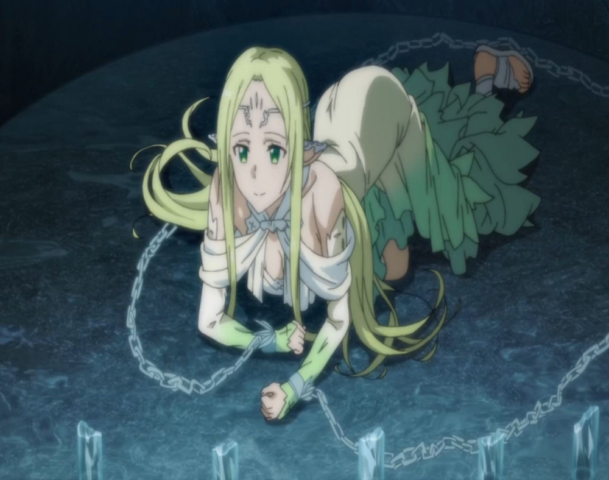

第一百九十五章 芙蕾雅值得期待
索列姆海姆突袭小队的七人职业构成大致上还算平衡，近战型有输出型的脆皮剑士桐人、莉法和优纪，三人因为各自的高级技能以及装备的关系都有着不低的输出；防御型的肉盾意外是自称狂战的萌正太，虽然只有一个人，但是小正太样子的银河却意外的能干，不只是能抗，手上挥舞的与体型不相符的大剑也能给索列姆海姆里的邪神怪物造成巨量伤害。
然后法师系的，明明拿着冈格尼尔的蓝子并没有参与近战，而是将其作为法杖使用，设定上是世界树树枝锻造的长枪倒也确实支持这项功能，所以也不算被埋没，和武器技能需要提升技能熟练度来解锁高级技能不一样，除了个别的技能以及和种族不配套的技能，大部分法系的咒文只要能流利念出繁琐的咒文，并不限制高级咒文的使用，法系技能熟练度的提升不过是缩减咒文冷却时间以及蓝条消耗而已，所以即使是没有玩ALO很久的蓝子也经常能给邪神怪物制造大量的伤害。
除了蓝子，负责支援并且为全员加持状态和恢复HP的是萨莎，也是因为萨莎大小姐的强力支援，使得银河的HP很少变成黄色，基本都维持在安全的绿色区域。而月姬所负责的则是妨碍怪物的行动以及打断怪物的大招。
因为霜之巨人几乎都离开索列姆海姆在地面上围捕动物型邪神，所以一路上与杂兵遭遇近乎为零，碰见的零星杂兵也被七人没有花费多少力气就收拾掉了。守卫通往下一次楼梯的BOSS虽然依旧忠于职守，然而第一层的BOSS却被七人以碾压姿态打败，第二层能够互补的双BOSS倒是给七人造成一些麻烦，但是在桐人从月姬哪里获得一把不算低的武器后，依旧用二刀流开挂过了这关。
虽然在ALO里，桐人的技能表里已经没有了二刀流，但是那只是因为特殊技能的格式问题而显示出错，完全不知道特殊技能存在的须乡伸之并没有就特殊技能而做出应对对策，其技能效果依旧是被写在武器技能程序里。
作为曾经拥有这一技能并将剑技牢记于心的玩家，即使为了保险起见已经将变成了乱码的技能删除了，但桐人如果能还原正确的剑技路径，也一样可以收获相应的剑技效果。只有在一年后ALO从雷克特公司被转手后，包括二刀流在内的十几种特殊技能才会都被新的运营者耗费大量人力被测试出来，然后打上补丁全部删除掉。那时虽然依旧能玩二刀流，但是所能收获的技能效果只是两把1+1的效果，而不是原本会成倍叠加伤害的二刀流效果。
虽然索列姆海姆里除了守候楼层阶梯的BOSS全员都在，而中级BOSS则大多到地面上去了，但到底是还有剩下一些，索列姆海姆露在外面的部分从上到下是四层，在前往第三层BOSS房间的途中遭遇了两次中BOSS战，然后就没有更多阻碍的抵达了第三层的楼层BOSS房间。
在这里等待七人的是有着上层牛头人的两倍体格，修长的下半身就像蜈蚣一般左右分别有十只脚的，面相十分凶恶的巨人，下一层就是索列姆的王座之间，守候着这一楼层的BOSS自然有着比之前两层更加强大的实力，虽然其物理耐性却很普通，但是其攻击力却很高，担当坦克的银河被BOSS持续攻击几次就HP槽就处于危险的红色……
然后，冈格尼尔终于走上正道被蓝子投掷出去，这只很强的BOSS尴尬的被流星之枪钉墙上了，知道这家伙物理脆皮的三个脆皮剑士抓紧输出，尾刀狂魔以独有的二刀流再次收获了丰收的一刀。
在进入第四层后，在踏入王座之间前，在通道上七人遇见了一个被囚禁在冰牢里的NPC。
肌肤如同刚落下的粉雪一样白皙，深金茶色的长发。透过覆盖在身体上的极少布料能够窥视到的胸.部尺寸，是在场的人及时胸怀最为宽广的莉法以及萨莎也难以企及的规模。 柔弱的双手双脚上都被粗犷的冰之枷锁禁锢，这种的光景让七人停下了脚步，应该是觉察到了有人来了的这点，趴在地上被囚困的女性，肩头微微一震，青色的锁头发出声响，她抬起脸来。
眼睛的色泽也跟头发一样的金茶色，其脸蛋如果换做是玩家虚拟体的话，必须是有着相当高的幸运值或者是用压倒性的财力持续购买才能有的俏丽面容。而且是一张在游戏内很少见的，洋溢着西欧风韵的美貌。
长长的睫毛上下眨了一下，女性用纤细的声音说：
“拜托……把我……从这里，放出去…………”
芙蕾雅，这是冰牢里的NPC的身份，当然，这个名字需要打上双引号，因为其真实身份是雷神索尔。与神话里只是换了女装就来冒充芙蕾雅不同，ALO里的索尔是用变化的咒文将自己变成了芙蕾雅的样子，然后才来见索列姆意图取回自己的宝物。同样，与神话里丑态百出却没有被索列姆识破的情况不太一样，这里的索尔变成芙蕾雅的样子不只是外貌的变化，甚至是连神情气质也如同女性一般柔美，完全看不出一点本来的彪悍气质。
“是陷阱。”不知缘由的桐人对眼前这样的情况作出如此的判断，这是他基于SAO时代两年的经验之谈。
“是陷阱哟。”
“是陷阱吧。”
这是莉法和萨莎大小姐的话语，她们的视线集中在芙蕾雅外貌的NPC的胸前，或许与其说是因为担忧是否是陷阱，不如说单纯的在意对方的女子力吧。
不过虽然读取不到萨莎小姐的想法，但是对方眼中并没有掩饰的看脏东西一样的眼神……是博览群书的大小姐已经知道了这个完美女性的内在了吗？
“哦，哦……是陷阱，啊……这是陷阱，吗？”
萌正太外观的银河似乎很纠结的样子，知道这家伙本体是冈崎的月姬，从与对方不算多不算少的接触中大概的了解了冈崎的为人——是那种不能把别人放着不管的类型的人，所以才会那么轻易的被她忽悠帮她处理身份问题，或者说明知道是被忽悠了，但是却还是老老实实的帮忙。
NPC虽然是系统自动生成的，但在真正热爱着假想世界的玩家眼里，却并不会它们看做是单纯的活动物体，而是生长在这个世界的居民。如果是在一般的任务中，银河一定会毫不犹豫的救下那名女性，带着她一同前行，然后在故事的结尾，或许只有一时兴起的举动会在背地里被人说成“呜哈哈哈那个笨蛋家伙”吧。然而现在这个任务一旦失败，将会导致亚尔夫海姆的毁灭，所以银河很难下决心承担这样的风险。
“……拜托了……谁来……”
“姐姐……”被索尔惹人怜惜的演技骗到的，竞争意识目前还稍显淡薄的蓝子以及优纪眼巴巴的看着虽然没有点明，但无疑在七人里是唯一能拍板做决定的人。
“安了。”月姬微笑着拍了拍两个小丫头的脑袋，“接下来的战斗没有‘女神’可不行呢……”
……
【芙蕾雅值得期待……指的是真货那个。以为禁了胸.部咱就没办法了吗，太天真了，今天就不换成欧派了】